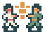
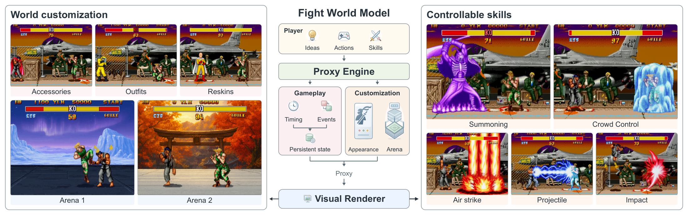
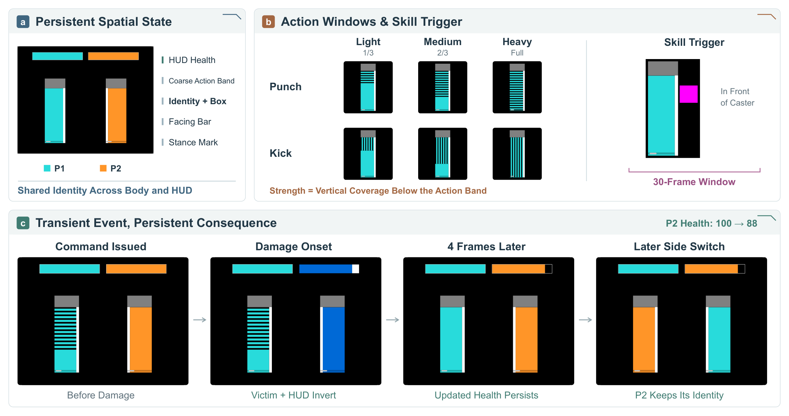
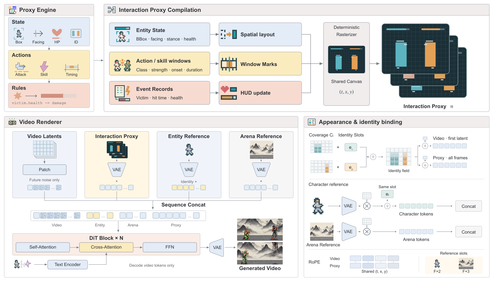
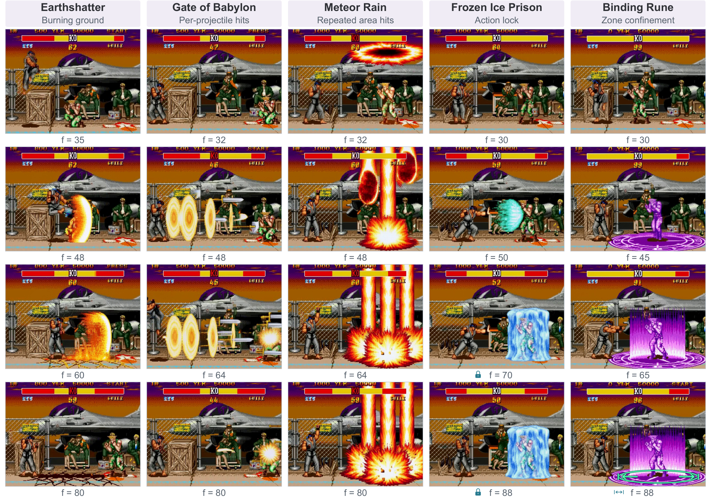
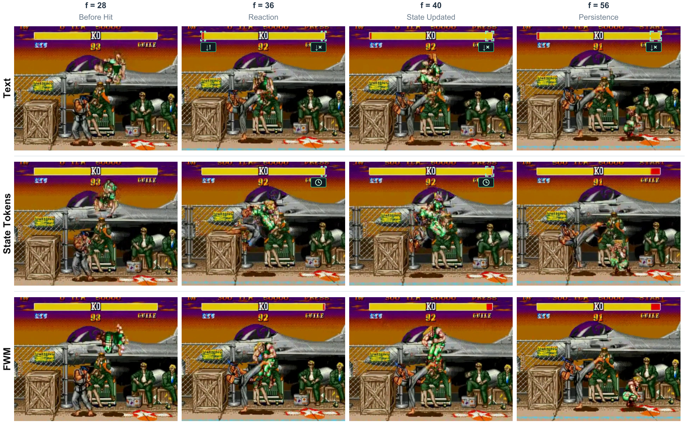
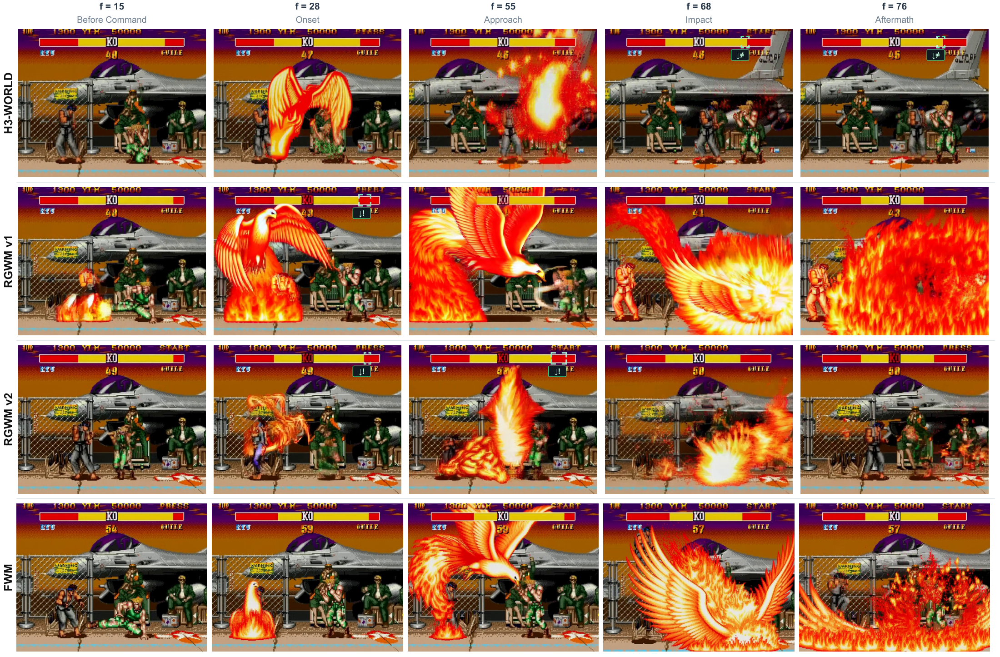
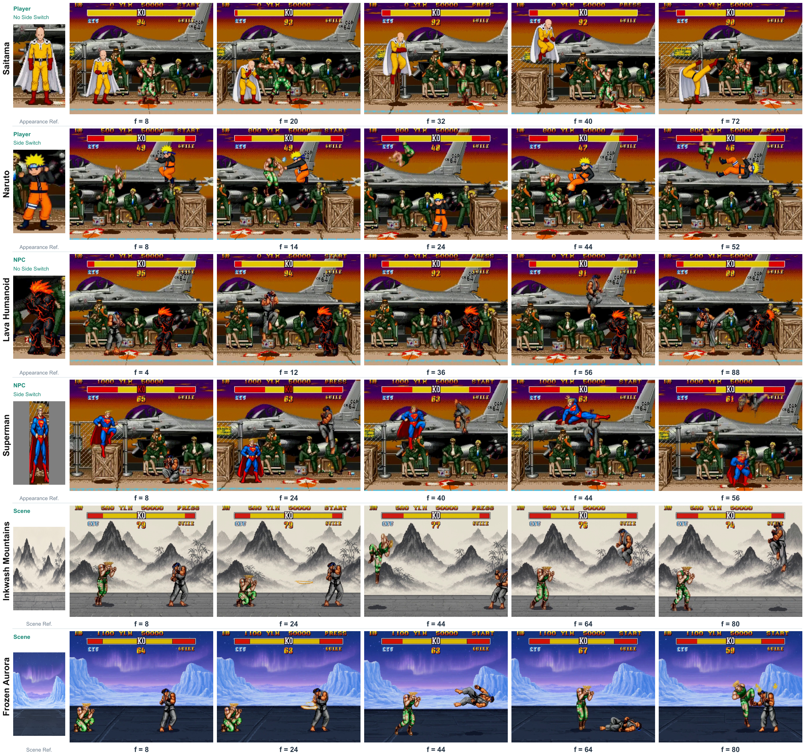

Resolve the interaction.
The engine updates fighter state, resolves hits, and applies the active rules.

Customizable combat through
visual interaction proxies
Execute the rules. Render the fight.
1 University of Oxford2 Independent Researcher3 Imperial College London4 Tsinghua University5 Nanyang Technological University
00The idea
A protected fighter can react without losing health. Lifesteal can heal the attacker. FWM connects these executable rules to the frames you see.

The engine updates fighter state, resolves hits, and applies the active rules.
A visual proxy aligns actions, reactions, and health with each fighter and frame.
A shared video renderer follows the proxy and the character or arena references.
01Screening room
Characters, arenas, and skill effects in FightWorld Corpus.
The videos in this screening room and the corpus gallery are edited training samples. FWM inference comparisons appear in the paper figures below.
Appearance / Identity
Appearance / Environment
Effects / Casting windows
02Under the image
Attempted actions, transient reactions, and persistent health have separate marks. Fighter identity ties them together, even when the fighters switch sides.

Horizontal stripes mark punches. Vertical stripes mark kicks. Coverage encodes strength. A magenta block follows the caster during a skill window.
A brief color inversion marks a reaction. Bar length independently records health. Edited rules can change one without changing the other.
The engine executes the rules, the compiler rasterizes the records, and a video diffusion transformer renders the continuation. Shared identity embeddings bind references to the intended fighter.

03Executable rules
The engine reruns the same initial state and submitted actions under edited rules. The resulting proxy changes. The trained renderer stays the same.
Source: the paper's rule intervention study. Health MAE is in percentage points of maximum health. Joint rule fidelity requires the applicable reaction and health checks to pass together. These are reported evaluation results.

04FightWorld Corpus
Native gameplay and edited videos share the same training format, with interaction proxies, text descriptions, and available appearance references.
74 selected corpus clips. Open a sample to compare its video, proxy, and reference.
05Evaluation
Joint fidelity checks actions, entity assignment, timing, reactions, and persistent health together. All complete-information encodings below receive the same executed records.
Joint interaction fidelity
Correct hit reactions
Health mean absolute error
| Control representation | Move ↑ | Attack ↑ | Skill ↑ | Reaction ↑ | Health MAE ↓ | Joint ↑ |
|---|---|---|---|---|---|---|
| Spatial proxy + state tokens | 94.48 | 91.23 | 82.42 | 87.17 | 1.23 | 63.28 |
| Spatial proxy + text | 96.72 | 93.63 | 92.43 | 92.24 | 2.78 | 76.35 |
| FWM interaction proxy | 99.78 | 99.24 | 99.06 | 99.79 | 0.15 | 98.48 |


Identity binding raises character adherence on side-switch clips from 53.68% to 98.27% under matched reference inputs and training budgets. The identity follows the fighter as its screen position changes. Source: the paper's identity binding study.

Evaluated in fixed-camera, two-fighter 2D combat with a single video backbone. Transfer to other games, moving cameras, 3D worlds, and more fighters remains to be evaluated.